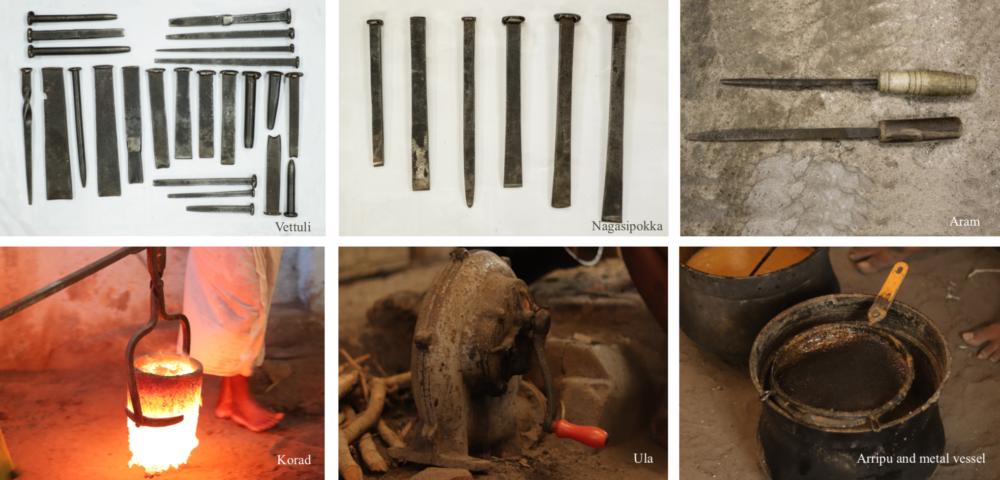

Odiolai (measuring ribbon)
This tool is made for temporary use. It is made out of a small leaf of coconut leaf. The different proportions to be used in the image under preparation,
are marked o the ribbon by folding it.The total length of the ribbon is equal to the total length of the wax model, under preparation.
As and when one dries up it is replaced by another; otherwise, the ribbon would give wrong measures, as coconut leaf shrink is the process of drying.
Mezuku Kuchi (Spatula) This is a flat spin- dle-shaped tool with tapering ends and is made out
of sandalwood. A spatula is used for shaping the wax model to the required form and relief.
Mezhuku Kathi (knife used for cutting wax) Knives of varying sizes and shapes are used by the
craftsman for removing the unwanted portions. The knife most commonly used for this
purpose is called Mezhuku Kathi. The flat handle is wrapped with a cloth so that at the time of
operation the craftsman does not injure his fingers and has a good grip of the knife. The blade
is made out of thin and flex- ible steel.
Seevuli (scraper)
Steel scrapers of different sizes, having dif- ferent types of working edges are used or scraping
the wax models so as to give them a sharper relief. They are also used or scrap- ping the
surface of the cast icons.
Mezhukuthadi (Measuring scale)
A measuring scale with inches marked on one edge and centimetres on the other. It is either
made of wood or steel. Mezhukuthadi (foot rule) It is a wooden roller and is used or making
wax plates. It is about a foot in length and is rolled over- heated prepared wax which is kept
over a flat surface.
Kampass (pair of compasses)
Metal compasses of different sizes are used to describe circles on wax or metal sheets.
Pathikkol (soldering iron)
Flat metal piece having a wooden handle. The tip of the instrument is blunt and its length
varies. The working edge of the soldering iron is heated and is used to melt the ends of the
wax when certain parts of the prepared wax model are joined together.
Chuthy (hammer)
Hammers of different weight are used while giving final shape to the cast iron. The heavi- er
ones are used while joining the base of the metal icon with the pedestal. The lighter ones are
used during chiselling and engraving.
